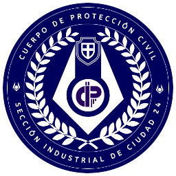

 Manual de Procedimientos del Cuerpo de Protección Civil

Capítulo 1: Introducción
Este manual ha sido desarrollado para estandarizar y optimizar las operaciones de Protección Civil, el cuerpo encargado de mantener el orden y la seguridad en las ciudades bajo nuestra administración. La Protección Civil desempeña un papel crucial en la vigilancia, el control y la gestión de la población, así como en la respuesta a cualquier amenaza que pueda surgir.
Sección 1.1: Objetivo del Manual
El objetivo de este manual es proporcionar directrices claras y detalladas para todos los miembros de Protección Civil, asegurando que cada agente esté equipado con el conocimiento y las habilidades necesarias para llevar a cabo sus funciones de manera eficiente y segura. Este documento cubre desde protocolos básicos de patrullaje hasta procedimientos de respuesta ante emergencias y manejo de situaciones críticas.Capítulo 2: Rangos
2.1 RCT
Recluta es el primer rango que se da a las nuevas unidades que se incorporan a la Protección Civil. Se otorga durante el periodo de iniciación y formación inicial sobre los procedimientos operativos básicos. La formación suele consistir en unas primeras clases teóricas y prácticas antes de que la unidad sea enviada sobre el terreno. La formación sobre el terreno se realiza bajo la estrecha supervisión de una unidad de Comandancia.
Permisos:
- Acceso limitado a equipamiento estándar de Protección Civil.
- Permiso para salir del nexo en patrulla como parte de un Equipo de Protección que contenga al menos un funcionario
i4+ que actúe como supervisor.
- Las únicas unidades permitidas para la instrucción de un RCT serán igual o superiores a i2.
2.2 Intención 5 - i5
Como primer rango de miembro de pleno derecho de Protección Civil, se considera que los i5 cumplen los requisitos de calidad establecidos para las unidades. El objetivo principal de este rango es que la unidad adquiera experiencia y colme las lagunas de conocimiento que puedan quedar en los procedimientos operativos cotidianos.
Permisos:
- Acceso situacional al armamento secundario estándar. Solo lo podrán utilizar cuando les sea requerido, y lo
tendrán que recoger de puntos de control o nexo.
- Permiso para patrullar bajo el mando y/o supervisión de un i4+. Una unidad i5 solo podrá patrullar de forma
individual en el caso de que no se encuentre ninguna unidad i4+ operativa.
2.3 Intención 4 - i4
Después de que un i5 adquiera suficiente experiencia, será ascendido a este rango. Se espera que los i4 tengan experiencia en todas las operaciones cotidianas y hayan pasado por un par de situaciones difíciles en las que lograron mantenerse firmes. Estas unidades ya no deben considerarse "verdes" y deben gestionar todas las situaciones de código azul sin necesidad de supervisión. Dado que alcanzar este rango es principalmente una cuestión de experiencia, básicamente, todas las unidades que fueron lo suficientemente buenas como para alcanzar i5 pueden esperar alcanzar este rango también.
La diferencia principal de un i4 es su experiencia, una mejor capacidad de iniciativa y/o liderazgo ante un i5. Se encargarán de guiar a los i5 pero aún tienen un gran proceso de aprendizaje por delante que deben demostrar ante Comandancia.
Permisos:
- Podrá portar en todo momento su arma secundaria reglamentaria. Se prioriza el uso de la porra eléctrica.
- Puede liderar o asumir el mando de un Equipo de Protección iniciado por un i5.
- Acceso al entrenamiento de uso y mantenimiento de granadas tácticas no letales.
2.4 Intención 3 - i3
Un rango otorgado a quienes han probado ser funcionarios eficaces y experimentados, con acceso a un mayor abanico de competencias y herramientas de Protección Civil.
Se puede decir que esta unidad ya forma parte del cuerpo de Protección Civil íntegramente, es uno de los primeros cimientos. Tiene que ser capaz de realizar independientemente las actividades cotidianas. A partir de aquí su función empieza a volcarse más en guiar a las unidades inferiores. Por ejemplo, en vez de resolver los avisos por su cuenta, tendrán que ordenar y enseñar a las unidades de rango inferior a resolver las situaciones que ellos ya han integrado en su día a día.
Permisos:
- Acceso a un mayor abanico de equipamiento estandarizado secundario más amplio. (canjeado mediante el uso de
CS).
- En caso de que un ciclo requiera la asistencia, vigilancia o ayuda de Protección Civil, un i3 podrá dar el visto
bueno de cuándo empezar el ciclo.
- Cuando sea necesario, un i3 podrá solicitar inspecciones de bloque siempre que se presente una justificación
válida para ello.
- Acceso situacional al armamento primario estándar. Solo lo podrán utilizar cuando les sea requerido, y lo tendrán
que recoger de puntos de control o nexo.
- Podrá llevar a cabo interrogaciones sin supervisión.
- Acceso a entrenamiento de viscerador. Si el entrenamiento es superado, podrán llevar una unidad.
- Acceso al entrenamiento de uso y mantenimiento de granadas tácticas letales.
- Puede liderar o asumir el mando de un Equipo de Protección iniciado por un i4.
2.5 Intención 2 - i2
En i2, las unidades empiezan a tener cierta autoridad y responsabilidad hacia las unidades de rango inferior, especialmente en el contexto fuera del escuadrón. Como veteranos que conocen al dedillo los procedimientos operativos, se espera de ellos que sean capaces (e intenten activamente) formar y supervisar a las unidades de rango inferior. Desde el punto de vista operativo, son buenos jefes de equipos de protección y pueden dirigir incluso en circunstancias difíciles.
Deben cumplir los códigos de la ciudad a rajatabla.
Permisos:
- Acceso a un mayor abanico de equipamiento estandarizado más amplio y avanzado, tanto primario como secundario.
(canjeado mediante el uso de CS).
- Se les permite portar su arma primaria en todo momento. Cualquier uso indebido y/o infundado del equipamiento
primario será severamente sancionado según el protocolo.
- Permitido dirigir un Equipo de Protección de incursión en zona marginal, redadas y roturas de contenedores o
puertas ya requerirán una orden o un motivo justificado.
- Permitido autorizar inspecciones en bloque y coagulación.
- Permitido organizar entrenamiento para otras unidades tras formular una petición a un RL con una breve explicación
de lo que consistirá el entrenamiento.
- Permitido asignar créditos de esterilización de las unidades. Un uso indebido y/o subjetivo de esta función será
castigada severamente.
- Puede liderar o asumir el mando de un Equipo de Protección iniciado por un i3.
2.6 Intención 1 - i1
Para los veteranos más experimentados, la intención 1 es una de las posiciones más altas que puede obtener una unidad. Sin embargo, eso no significa que no tengan autoridad: sus palabras tienen cierto peso por pura experiencia y a menudo se les asignan tareas como ayudantes de los Líderes de Rango. Como es probable que se conviertan en Líderes de Rango, esto también entrena y pone a prueba sus habilidades de mando no operativas.
Permisos:
- Permitido liderar un Equipo de Protección en la zona infectada, con autorización de un RL.
- Autorizado a cambiar el código de estado a naranja.
- Permitido organizar entrenamiento para otras unidades sin previa autorización a un RL.
- Permitido retirar créditos de esterilización de las unidades, así como cualquier otro castigo que sea
merecido.
- Puede liderar o asumir el mando de un Equipo de Protección iniciado por un i2.
A partir de este punto los funcionarios dirigen, administran y gestionan sus especializaciones apropiadas. Son responsables de acción disciplinaria y ascensos. Los ascensos a los funcionarios son otorgados en base a varios factores. La competencia, la actividad, el desempeño y la lealtad al Cuerpo serán tomadas en cuenta. Fallar en lograr estas expectativas, podría mostrar un problema en el desempeño de tu deber, excepto que tus acciones demuestren lo contrario. Las habilidades de liderazgo, también son definitivas al ascender a un funcionario, ser capaz de dirigir a unidades de forma efectiva y emitir sugerencias y recomendaciones a los Líderes de Tierra en servicio que puedan mejorar su desempeño también se contarán a la hora de un posible ascenso.
2.7 Líderes de Rango [RL o LR]
Un comandante de campo para un escuadrón. Son funcionarios capacitados y líderes bien entrenados, escogidos por mano de los oficiales de campo.
Permisos:
- Posee acceso a todo el equipamiento.
- Puede autorizar a las unidades en su escuadrón para el uso de armamento y equipamiento pesado.
- Puede ascender o castigar a funcionarios, aunque se les anima a consultarlo con un oficial previamente.
- Puede designar un código naranja.
- Puede autorizar un aislamiento perimetral.
- Código rojo puede ser activado solo sí no hay ningún Dispatch disponible y tiene una razón MUY buena para ello.
2.8 Capitán [CpT]
El funcionario más capacitado en el campo, estos oficiales son los primeros en la línea de contacto de los Supervisores. Estos funcionarios dirigen la completitud de Protección Civil bajo la vigilante guía de los Supervisores. Dado su inestimable valor a Protección Civil, se les recomienda encarecidamente que no entren al campo solos.
Permisos:
- Posee acceso a todo el equipamiento.
- Puede pedir una reunión con el Administrador de la Ciudad.
- Posee completo poder Ejecutivo sobre las materias de Protección Civil excepto si los Supervisores dicen lo
contrario.
- Puede pedir Asistencia de las Fuerzas Transhumanas de Vigilancia, incluso de Vigilancia Aérea (aunque no tendrá
por qué ser otorgada).
- Puede autorizar un toque de queda y juicio autónomo.
2.9 Dispatch
Una IA la cual es conocida por casi todo el mundo, sin embargo pocos saben que su función es la de gestionar a toda Protección Civil en la ciudad. Alimentada por el poder de la Tecnología Combine, la única limitación de la IA es la de ser menos eficiente a la hora de designar tácticas no-convencionales.
Durante estados de Socio-Estabilidad Estable a Marginal, mantiene un rol de soporte, otorgando información en cuanto a situaciones del sector. En caso de que la estabilidad caiga más, toma un rol de Comandante de Campo y sus órdenes son estrictas, teniendo que ser seguidas a rajatabla.
2.10 Supervisores
Los Supervisores de Protección Civil en el centro urbano sujeto.
Su palabra es final en todo protocolo y para cada decisión entorno al centro. Su palabra ha de ser seguida por civiles y funcionarios, sin importar el rango o estado. Representan a la prosperidad y el poder del Cuerpo de Protección Civil en la Ciudad en la que operan.
- Poseen completo poder ejecutivo sobre todas las materias del Cuerpo de Protección Civil en la ciudad.
Capítulo 3: Código de Conducta
Sección 3.1: Ética y Profesionalismo
Todos los oficiales deben mantener los más altos estándares de ética y profesionalismo. Esto incluye:
- Actuar con integridad y honestidad en todas las situaciones.
- Tratar a todos los individuos con respeto y dignidad.
- Evitar cualquier conducta que pueda desacreditar al cuerpo del CPC.
- Mantener la confidencialidad de la información sensible.
Sección 3.2: Uso de la Fuerza
El uso de la fuerza debe ser siempre el último recurso y debe ser proporcional a la amenaza percibida. Las pautas incluyen:
- Evaluar la situación y optar por métodos no violentos siempre que sea posible.
- Usar técnicas de desescalada para calmar situaciones tensas.
- Documentar y reportar cualquier uso de la fuerza inmediatamente después del incidente.
Capítulo 4: Contrabando
Sección 4.1: Contrabando nivel amarillo
Materiales de artesanía de alta calidad: Excepciones locales con licencia y trabajadores de la
unión. Los materiales sospechosos tendrán una indicación en su descripción o un borde amarillo en el inventario.
+8 Unidades de materia prima: Excepciones locales con licencia y trabajadores de la unión. Los
objetos o materias primas no permitidas tendrán una indicación en su descripción.
La basura se identificará fácilmente: objetos rotos, recipientes vacíos, electrónica antigua (monitores, batería de
coche), o objetos que generalmente se nota que no tienen uso. Leer la descripción de los obj. para info.
Ropa no autorizada: Ropa de leales, prendas que tapen el rostro, etc. Chaquetas de partidario o
colaborador en un ciudadano sin ese estatus, bandanas de brazo.
Medicinas de curso legal sin la prescripción médica correspondiente: Excepción UMIC. Analgésicos,
suero, desinfectante.
Comida y bebida no autorizada: Principalmente proveniente de Xen, a excepción de lo enlatado.
Alimentos de procedencia de Xen, como carne de parásito, exógeno... A excepción de sanguijuelas enlatadas.
Sección 4.2: Contrabando nivel naranja
Radios de comunicación: A excepción de civiles autorizados, miembros de la unión. Cualquier tipo de
radio de mano.
Drogas y pastillas de atributos básicas: Excepción UMIC en el caso de las pastillas. Compuestos
químicos o explosivos, pastillas, jeringas o viales. Además de píldoras de colores de uso médico de nivel
básico.
Ropa, tarjetas, cerraduras o equipamiento de las uniones: Excepción miembros de la unión, o
herramientas dentro de propiedad privadas o locales autorizados. Cualquier prenda (chaquetas o trajes de protección
de la UTC, batas de la DIP o UMC...) Herramientas (martillos, picos, cajas de herramientas o parecidos de la Unión)
Cualquier tarjeta de acceso sin ser parte de esa facción.
Armas punzantes o contundentes: Exceptuando cuchillos sin filo o herramientas para locales
autorizados y unión. Armas contundentes como palancas o similares, cuchillos afilados, máscaras de gas, ropas
blindadas.
Dispositivos de restricción: Bridas o esposas, dispositivos de bloqueo (biocierres).
CID de otro individuo: Seguir protocolo de la tabla de delitos. Se revisa si la información
genética del individuo portando la CID es correcta, mediante interrogación, etc.
Sección 4.3: Contrabando nivel rojo
Armamento de fuego: Cualquier tipo de armamento. Pistolas, fusiles, subfusiles, o cualquier
fabricación que pueda disparar proyectiles.
Munición funcional: Si se encuentra inoperativa no será considerada ilegal. Cualquier tipo de
munición para armas de fuego.
Droga transhumano y pastillas de calidad: Pastillas excepción UMIC. La droga "Transhumano" y
cualquier pastilla de atributos superior al nivel básico.
Equipo de la Alianza: Cualquier herramienta o equipo exclusivo del cuerpo. Evisceradores
(robosierras), torretas de la alianza, creadores de tarjetas CID.
Artículos de propaganda contra la unión: Propaganda, desinformación.
Capítulo 5: Clasificación de Delitos
Sección 5.1: Delitos Menores
Correr y saltar sin motivo: -5 Puntos de lealtad + Re-educar o aviso verbal (a elección del agente)
Gritar sin motivo: -5 Puntos de lealtad + Re-educar o aviso verbal (a elección del agente)
Agresión a un ciudadano (Un golpe, empujón…): [-5/-15] + Administrar/Re-educar (a elección del agente)
Intoxicación pública: [-5/-8] + Re-educar
Desorden público: [-5 | -10] + Administrar/Re-educar. (El castigo más genérico, usado para muchos tipos de infracciones que impliquen mal comportamiento.)
Contrabando de nivel amarillo: [-5 | -15] Dependiendo de la cantidad + Administrar
Resistirse a la autoridad (huir, zafarse, mentir): [-5 | -20] + Administrar
Reunirse tres personas o más en la calle, de código amarillo en adelante: Aviso verbal, de repetirse re-educar + [-5]
Sección 5.2: Delitos Medios
Agresión a un leal de grado azul o superior: [-10 | -20] + Administrar
Contrabando de nivel naranja: [-15 | 25 ] + Re-educar/Administrar
Deambular en código rojo: [-20 ] Administrar, interrogar y registrar.
Transitar la ciudad sin bandana: [-15 | -30 ] + Interrogar y aislar hasta que llegue un superior si se cree necesario.
Difusión/posesión de propaganda ilegal: [-15 | -30 ] + Interrogar y revisar su apartamento/local.
Ser encontrado en la zona de exclusión: [-15] Administrar y se le debe registrar. Cualquier objeto o acción que aumente su castigo debe tenerse en cuenta.
Tenencia de armas punzantes o contundentes: [-20 | -30 ] Administrar, interrogar y revisión de vivienda.
Contrabando de drogas: [-10 | -30] Administrar, si es una cantidad alta (+7) interrogar y registrar vivienda.
Robo: [-10 | -30] Administrar, interrogar e intentar recuperar los bienes. De creerlo necesario aislar y esperar a comandancia.
Sección 5.3: Delitos Graves
Posesión de contrabando rojo: [-30 | -50] Administrar, interrogar sobre el origen y aislar hasta que llegue un superior de creerlo necesario.
Agredir de cualquier forma a un agente de protección civil: [-20 | -50] Administrar, interrogar y aislar hasta que llegue un superior de creerlo necesario.
Asesinato: Aislar y esperar hasta que llegue un superior.
Intento de asesinato (Ataques que podrían haber sido letales o intentos premeditados): [-30 | 50] Administrar, interrogar, dependiendo de la intencionalidad del ataque, aislar hasta que llegue un superior.
Tenencia de armas de fuego: Administrar, interrogar sobre el origen y aislar hasta que llegue un superior.
Producción de drogas o armas: Administrar, interrogar y aislar hasta que llegue un superior.
Falsificar identificación/poseer varias identificaciones: [-20 | -40] Administrar, interrogar y aislar hasta que llegue comandancia de creerse necesario.
Cualquier bandana negra o ciudadano que haya bajado por debajo de 15 puntos, será amputado. Las amputaciones si no hay una orden diferente de comandancia de por medio, se realizarán en la sala de reubicación fuera del mundo.
Capítulo 6: Ramificaciones y Mejora de Equipamiento
Al llegar al rango i4 se podrá escoger la primera especialización de equipo, las diferentes especializaciones darán oportunidades a los líderes de escuadrón a la hora de organizar a las unidades en los operativos. Es importante seleccionar bien la rama que se desea en cuestión, ya que no podrá escogerse una segunda especialización hasta en rango i2, necesitando un reemplazo de memoria para llegar.
El rappel y el kevlar pesado se desbloquean en el rango i3, al igual que el armamento primario ligero.